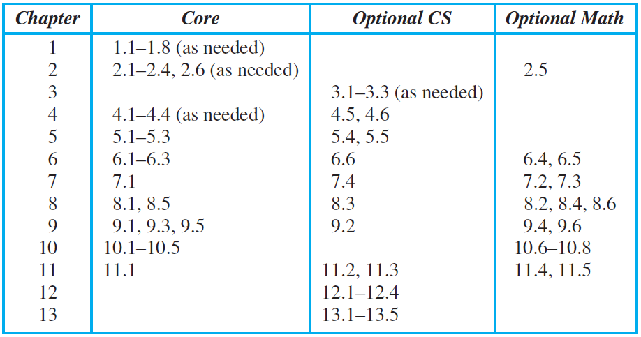

|
Greek Alphabet:
Α α alpha,
Β β beta,
Γ γ gamma,
Δ δ delta,
Ε ε epsilon,
Ζ ζ zeta,
Η η eta,
Θ θ theta,
Ι ι iota,
Κ κ kappa,
Λ λ lambda,
Μ μ mu,
Ν ν nu,
Ξ ξ xi,
Ο ο omicron,
Π π pi,
Ρ ρ rho,
Σ σ sigma,
Τ τ tau,
Υ υ upsilon,
Φ φ phi,
Χ χ chi,
Ψ ψ psi,
Ω ω omega,
|
|
 |
|
Schedule
|
|
• 行事曆:
114,
|
| |
| W | Lecture Notes | 章節 |
|---|
| 01 | | |
| 02 | | |
| 03 | | |
| 04 | | |
| 05 | | |
| 06 | | |
| 07 | 04.06(一) 不上課(清明節補假) | |
| 08 | | |
| 09 | 04.20(一) 不上課
04.23(四) 第一次期中考 |
1, 2, 3 |
| 10 | | |
| 11 | | |
| 12 | | |
| 13 | 05.21(四) 第二次期中考 | 4, 5, 6 |
| 14 | | |
| 15 | | |
| 16 | | |
| 17 | | |
| 18 | 06.22(一) 不上課
06.25(四) 期末考 |
8, 9, 10 |
|
|
|
|
Syllabus
|
- Lecture:
- • Monday 2:10-3:00 pm
- • Thursday 10:10-12:00 am
- Location:
- • Sixth Academic Building, 327
- • 第六教學大樓, 327
- Class webpage:
-
- • 課程大綱 https://tjhsieh.github.io/c/dm/dm2026s/
- Submissions:
-
- • 北科ｉ學園 PLUS
- Instructor:
- • Prof. H s i e h
- • Office: Technology Building 1535
- • Office hours: TBA
- Teaching Assistant:
- • TBA
- • Office: Technology Building 1422
- • Office hours: TBA
- Textbook:
- • Kenneth H. Rosen, Discrete Mathematics and Its Applications 8/e, McGraw-Hill.
- Outline: (from Catalog)
-
• Covered topics include: (1) Sets and Propositions, (2) Counting, Permutations, and Combinations, (3) Relations and Functions, (4) Graphs, (5) Trees, (6) Finite State Machines, (7) Analysis of Algorithms, (8) Generating Functions, (9) Recurrence Relations, (10) Groups, and (11) Boolean Algebras.
- Grading: (暫定)
- • homework 20%
- • midterm 40%
- • final exam 40%
- • class participation 10%
- Policies:
- • No late homework will be accepted.
- • A regrade request must be submitted within one week after the original grade is received.
- • Students are not allowed to copy solutions from others, and students should not share your answers with others. Students will receive a score of zero for doing this.
- • Be sure to check the course website frequently.
- • Academic Honesty: (UCI) (Columbia)
- • 國立臺北科技大學 考試規則
- • 國立臺北科技大學 學生獎懲辦法
- Tools:
- • Overleaf (online, collaborative LaTeX editor)
- • Texmaker
- • MiKTeX
- • 新手安裝LaTeX懶人教學
- • WinEdt
- Resources:
- • Detexify
- • HostMath
- • Online LaTeX Equation Editor
- • LaTeX4technics
- • Sciweavers
- • TeX equation editor
|
|
|
|
Why LaTeX
|
| LaTeX (基於 TeX 的排版系統) | TeX (排版軟體) |
|---|
| Leslie Lamport | Donald Ervin Knuth |
| 萊斯利·蘭伯特 | 唐納德·爾文·克努斯 「高德納」 |
|
|

|
|
|
|
\( f(n) = \mathcal{O}(g()) \)
|
|
|
| 符號 |
定義 |
定義 |
| \( f(n) = \mathcal{O}(g()) \) |
Asymptotically upper bound |
漸近上限 |
| \( f(n) = o(g()) \) |
Asymptotically negligible |
漸近可忽略不計 |
| \( f(n) = \Omega(g()) \) |
Asymptotically lower bound |
漸近下限 |
| \( f(n) = \omega(g()) \) |
Asymptotically dominant |
漸近主導 |
| \( f(n) = \Theta(g()) \) |
Asymptotically tight bound |
漸近緊約束 |
|
|
Big-\(O\) notation has been used in mathematics for more than a century. In computer science it is widely used in the analysis of algorithms, as will be seen in Section 3.3. The German mathematician Paul Bachmann 保羅·巴赫曼 first introduced big-\(O\) notation in 1892 in an important book on number theory. The big-\(O\) symbol is sometimes called a Landau symbol after the German mathematician Edmund Landau 愛德蒙·蘭道, who used this notation throughout his work.
The use of big-\(O\) notation in computer science was popularized by Donald Knuth, who also introduced the big-\(Ω\) and big-\(Θ\) notations defined later in this section.
The fact that \(f(x)\) is \(O(g(x))\) is sometimes written \(f(x) = O(g(x))\). However, it is acceptable to write \(f(x) ∈ O(g(x))\).
Big-\(O\) notation is used extensively to describe the growth of functions, but it has limitations. In particular, when \(f(x)\) is \(O(g(x))\), we have an upper bound, in terms of \(g(x)\), for the size of \(f(x)\) for large values of \(x\).
However, big-\(O\) notation does not provide a lower bound for the size of \(f(x)\) for large \(x\).
For this, we use big-Omega (big-\(Ω\)) notation.
When we want to give both an upper and a lower bound on the size of a function \(f(x)\), relative to a reference function g(x), we use big-Theta (big-\(Θ\)) notation.
Both big-Omega and big-Theta notation were introduced by Donald Knuth in the 1970s. His motivation for introducing these notations was the common misuse of big-\(O\) notation<\u> when both an upper and a lower bound on the size of a function are needed.
|
|
|
|
P versus NP problem
|
| |
| • Overleaf P versus NP |


|
 |
|
P problem
Polynomial Time |
|
NP problem
Nondeterministic Polynomial Time |
| The general class of questions for which some algorithm can provide an answer in polynomial time is "P" or "class P". |
|
For some questions, there is no known way to find an answer quickly, but if one is provided with information showing what the answer is, it is possible to verify the answer quickly.
The class of questions for which an answer can be verified in polynomial time is NP, which stands for "nondeterministic polynomial time". |
|
|
| NP-hard problem |
|
NP-complete problem |
NP-hard problems are those at least as hard as NP problems; i.e., all NP problems can be reduced (in polynomial time) to them.
NP-hard problems need not be in NP; i.e., they need not have solutions verifiable in polynomial time. |
|
NP-complete problems are a set of problems to each of which any other NP problem can be reduced in polynomial time and whose solution may still be verified in polynomial time. That is, any NP problem can be transformed into any of the NP-complete problems.
Informally, an NP-complete problem is an NP problem that is at least as "tough" as any other problem in NP. |
|
|
|
|


|
| Dijkstra's algorithm, A* search algorithm |
|
|
|
MathJax
|


|
|
\[ Q_1 = \bigwedge_{i=1}^{n}\bigvee_{j=1}^{n}p(i,j)\]
|
|
|
|


|
|
|
|
Table of Contents (8/e)
|
- 1 The Foundations: Logic and Proofs:
- • 1.1 Propositional Logic
- • 1.2 Applications of Propositional Logic
- • 1.3 Propositional Equivalences
- • 1.4 Predicates and Quantifiers
- • 1.5 Nested Quantifiers
- •
1.6 Rules of Inference
- •
1.7 Introduction to Proofs
- •
1.8 Proof Methods and Strategy
- 2 Basic Structures: Sets, Functions, Sequences, Sums, and Matrices
- • 2.1 Sets
- • 2.2 Set Operations
- • 2.3 Functions
- • 2.4 Sequences and Summations
- • 2.5 Cardinality of Sets
- • 2.6 Matrices
- 3 Algorithms
- •
3.1 Algorithms
- • 3.2 The Growth of Functions
- • 3.3 Complexity of Algorithms
- 4 Number Theory and Cryptography
- • 4.1 Divisibility and Modular Arithmetic
- •
4.2 Integer Representations and Algorithms
- •
4.3 Primes and Greatest Common Divisors
- • 4.4 Solving Congruences
- •
4.5 Applications of Congruences
- •
4.6 Cryptography
- 5 Induction and Recursion
- • 5.1 Mathematical Induction
- • 5.2 Strong Induction and Well-Ordering
- • 5.3 Recursive Definitions and Structural Induction
- •
5.4 Recursive Algorithms
- •
5.5 Program Correctness
- 6 Counting
- • 6.1 The Basics of Counting
- • 6.2 The Pigeonhole Principle
- • 6.3 Permutations and Combinations
- • 6.4 Binomial Coefficients and Identities
- •
6.5 Generalized Permutations and Combinations
- •
6.6 Generating Permutations and Combinations
- 7 Discrete Probability
- •
7.1 An Introduction to Discrete Probability
- •
7.2 Probability Theory
- •
7.3 Bayes’ Theorem
- •
7.4 Expected Value and Variance
- 8 Advanced Counting Techniques
- • 8.1 Applications of Recurrence Relations
- • 8.2 Solving Linear Recurrence Relations
- • 8.3 Divide-and-Conquer Algorithms and Recurrence Relations
- • 8.4 Generating Functions
- •
8.5 Inclusion–Exclusion
- •
8.6 Applications of Inclusion–Exclusion
- 9 Relations
- • 9.1 Relations and Their Properties
- • 9.2 n-ary Relations and Their Applications
- • 9.3 Representing Relations
- • 9.4 Closures of Relations
- • 9.5 Equivalence Relations
- • 9.6 Partial Orderings
- 10 Graphs
- • 10.1 Graphs and Graph Models
- • 10.2 Graph Terminology and Special Types of Graphs
- • 10.3 Representing Graphs and Graph Isomorphism
- • 10.4 Connectivity
- • 10.5 Euler and Hamilton Paths
- • 10.6 Shortest-Path Problems
- • 10.7 Planar Graphs
- • 10.8 Graph Coloring
- 11 Trees
- •
11.1 Introduction to Trees
- •
11.2 Applications of Trees
- •
11.3 Tree Traversal
- •
11.4 Spanning Trees
- •
11.5 Minimum Spanning Trees
- 12 Boolean Algebra
- •
12.1 Boolean Functions
- •
12.2 Representing Boolean Functions/dd>
- •
12.3 Logic Gates
- •
12.4 Minimization of Circuits
- 13 Modeling Computation
- •
13.1 Languages and Grammars
- •
13.2 Finite-State Machines with Output
- •
13.3 Finite-State Machines with No Output
- •
13.4 Language Recognition
- •
13.5 Turing Machines
- Appendices
- •
A1 Axioms for the Real Numbers and the Positive Integers
- •
A2 Exponential and Logarithmic Functions
- •
A3 Pseudocode
|
|
|
|
|
|
|


{kind=link}